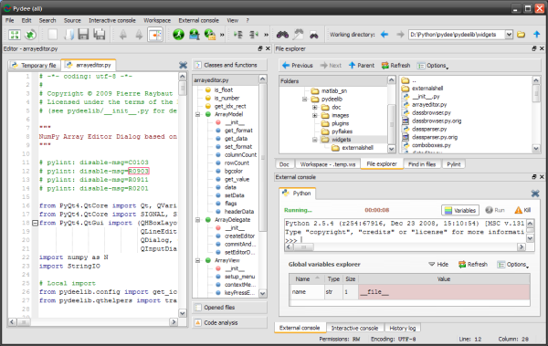

Welcome to Spyder’s documentation!¶
Spyder is a Python development environment with advanced editing, interactive testing, debugging and introspection features. It is especially recommended for scientific computing thanks to NumPy (linear algebra), SciPy (signal and image processing), matplotlib (interactive 2D/3D plotting) and MayaVi’s mlab (interactive 3D visualization) support.
Spyder may also be used as an extension library providing powerful console-related PyQt4 widgets.
- Spyder websites:
- Downloads, bug reports and feature requests: http://spyderlib.googlecode.com
- Discussions: http://groups.google.com/group/spyderlib

Contents:
- Overview
- Installation
- Global shortcuts
- Command line options
- Interactive Console
- Object inspector
- Online help
- History log
- External Console
- Explorer
- Project Explorer
- Editor
- Find in files
- Pylint extension
Indices and tables: